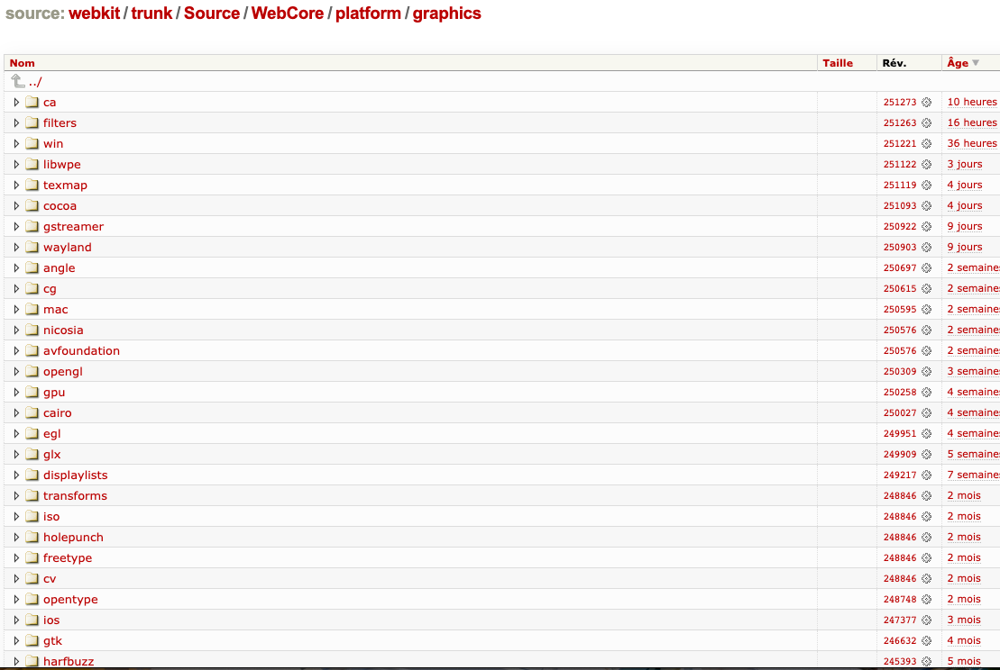
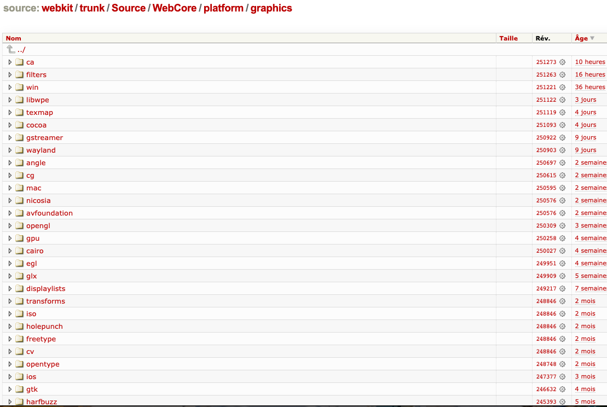
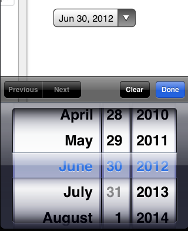
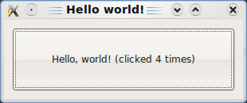
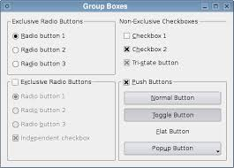
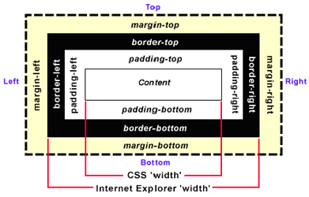
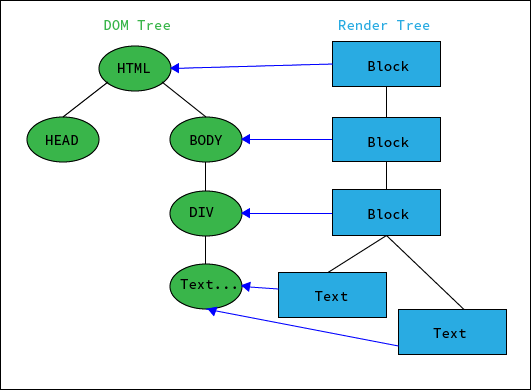
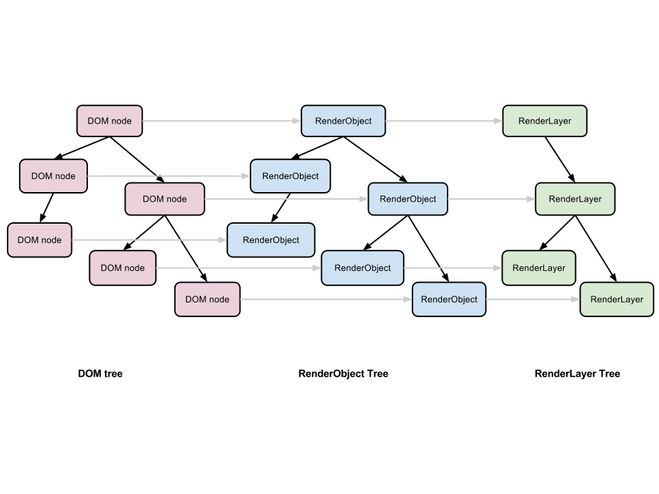
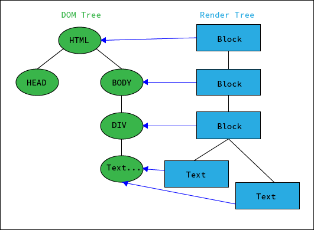
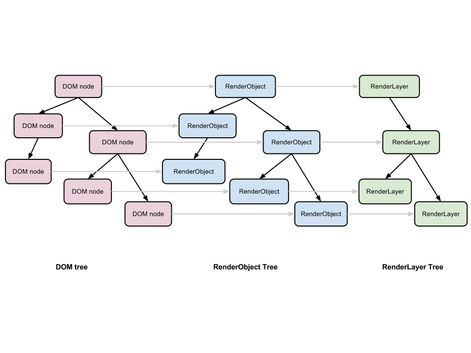

Comment fonctionne
un moteur de rendu
"du HTML aux pixels"
TBD / Meetup Web front #2

Nos hôtes
TBD
About you
Ratio iOS/Android/autres dans la salle ?
Qui s'est servi d'un navigateur web ce jour ?
Un moteur de rendu n'est pas un navigateur ⛵
Mais une suite de composants pour afficher et interagir avec une page web
- un composant pour charger des ressources réseau de manière intelligente
- un composant de règles CSS (ex: Media Queries, calcul de styles en cascade)
- un composant de dessin qui utilise une libraire graphique (ex: CoreGraphics pour Apple, Cairo GTK pour Linux/Win, Skia pour Android, HarfBuzz pour les glyphes ...)
- un composant pour éxécuter du JS (ex: JavaScriptCore sous WebKit, V8 sous Blink/Node, SpiderMonkey sous Firefox, Chakra sous IE/Edge)
- un composant pour inspecter et développer (ex: WebInspector, DevTools)
- un pilote pour jouer des tests auto, des conteneurs de cookies ou bdd, des masses de tests, etc...
oulala le 1er slide est déjà technique
... prenons du recul
Un exemple simple
Points commun avec le moteur Mercedes AMG F1 W0x
Slide 1 sur 12
Chapitre 1 : architecture des composants PU, MGU-H et MGU-K/KERS dans les homologations FIA
... ou on va plutôt parler du Web
What's up, Web ?
On a plusieurs navigateurs : Safari, Chrome, Firefox, IE, Opera, ...
... mais One moteur to rule them all ? Pas encore, et tant mieux

Dualité d'Apple et de Google qui ont partagé un moteur commun jusqu'en 2013 : WebKit, né en 2001, issu du monde Linux
Mozilla, Microsoft et Opera avec leurs propres moteurs : Gecko (ex Netscape réécrit), Servo, Trident, EdgeHTML, Presto
... mais IE va utiliser le moteur de Google : Blink, fork de WebKit
🌐 One Web. Desktop et mobile 🌐
Mozilla et Microsoft ont raté le virage mobile
Apple interdit tout autre moteur que le sien dans les apps iOS, Chrome et Firefox iOS ne sont que des coquilles autour de WebKit
Interrogations autour de Huawei qui pourrait forker WebKit ou Blink
Samsung, Sony, Nokia, HTC & all utilisent le moteur de Google per Android ... mais Firefox utilise GeckoView alternative à WebView sur Android pour toute PWA
KaiOS (Inde, Brésil) utilise un dérivé du moteur de Firefox Mobile
Opera Mini présent sur certains terminaux Kai, et Nokia 3310 2017
6 moteurs sur le marché
| Moteur | Dans / chez |
|---|---|
| WebKit | Safari/Mail.app, Epiphany (Linux), Samsung, Sony, Nintendo |
| Blink | Chromium/e, Opera, Vivaldi |
| Gecko/Quantum/Servo | Firefox, Fennec (mobile), Thunderbird |
| Trident/EdgeHTML | XBOX, IE < 2020 |
| Dérivé Firefox/Opera Mini | smart feature phones KaiOS % > iOS en Inde, Opera Mini est un moteur cloud |
Parts de marché des moteurs
Sur mobile domination Europe/USA à 95% du duo WebKit/Blink. Trident (Windows Phone) est mort. Firefox/Opera Mobile pour pays émergeants.
Sur desktop le % est un peu différent : Firefox + IE ont ~20% du marché
Sur l'embarqué Consoles, Smart TV, Kiosques : WebKit devant Blink
Corée du Nord : fork de Gecko, 'Naenara' (Mon Pays) pour visiter des sites réservés
🥄 Aparté sur le fork Blink (Google) 🥄
Mi 2013 Google décide de diverger de WebKit commun à Safari et Chrome et le forke en Blink
Changements de fond liés aux roadmaps divergeantes, au refus des -prefix CSS, au refus originel du code MathML, à l'arrivée du moderne Servo chez Mozilla
... à la concurrence avec Apple : Google était co contributeur à ~50% de WebKit, devenu copyright Apple
Blink est moteur de Chromium/Chrome, Opera, Silk, UI Battle.net, Steam, Spotify post WebKit, IE 2020
c'est aussi un "Google Show"
Microsoft qui lâche EdgeHTML pour Blink
“MS : I very recently worked on the Edge team, and one of the reasons we decided to end EdgeHTML was because Google kept making changes to its sites that broke other browsers, and we couldn't keep up.
For example, they recently added a hidden empty div over YouTube videos that causes our hardware acceleration fast-path to bail (should now be fixed in Win10 Oct update)
Moz : YouTube page load is 5x slower in Firefox and Edge than in Chrome because YouTube's Polymer redesign relies on the deprecated Shadow DOM v0 API only implemented in Chrome”
Youtube + Chrome = pubs = max 💰 💰 💰 pour Google
MS a clairement indiqué ne pas vouloir forker Blink et veut réouvrir des API bloquées pour les adblockers (reddit AMA Juin 2019)
Mozilla en tension avec Google : ils n'iront pas vers Blink, ils ont déjà un moteur Servo next-gen
✈️ Un moteur n'est pas un navigateur. Un navigateur se sert d'un moteur. ✈️
Airbus et Boeing partagent des moteurs General Electric, Rolls Royce, Trent : ce n'est pas le même avion == pas le même navigateur
Une compagnie peut changer l'intérieur de l'avion (Singapore, Qatar Airlines, Air France = Apple, Google, Samsung, Sony)
Des mécanos connaissant bien le moteur changent de boite : porosité des devs Apple/Google/Mozilla, Samsung/Sony/Nintendo
Le moteur de IE change pour Blink, ce n'est pas tout IE qui change : pour les pilotes - nous - peu change
Blink et WebKit hors des navigateurs
Embarqués dans des logiciels assez connus
Players Spotify, Pandora, Mail.app/iWork/iTunes/App Stores
Steam, Battle.net, Kindle Amazon
consoles Sony, Nintendo, outils Adobe (AEM Forms)
... de récents commits de Sony, la PS5 se profile
Nintendo Switch hackée à cause d'un vieux WebKit - 6 mois de delta
embarqué dans automobile, Smart TVs, kiosques (NetFront) ...
⚙️ Le moteur WebKit & les autres ⚙️
Bref historique
- 1990 Naissance du Web au CERN et de WorldWideWeb - 1er navigateur
- 1994 Naissance de Netscape Navigator issu de Mosaic - 2nd navigateur
- 1998 Naissance de KHTML/KJS issus de Konqueror (KDE, Linux), Netscape s'open source et crée Mozilla (Mosaic killer)
- 2001 Apple forke KHTML/KJS en WebKit : WebCore + JavascriptCore. Préféré à Gecko/Netscape
- 2003 Naissance de Safari sous WebKit, AOL crée la Fondation Mozilla, à but non lucratif
- 2005 Apple Open Source tout WebKit - pas seulement WebCore et JavascriptCore
- 2007 L'iPhone sort avec Safari 3, vision de Jobs : les Apps seront des pages HTML
- 2008 Google lance Android et Chrome sous WebKit, Apple lance le 1er SDK iOS... il n'y aura pas d'Apps HTML
- 2009 Proche divorce "on reste amis" entre Apple et KDE, code d'Apple était difficile à backporter en Open Source
- 2011 Apple demande à trademarker WebKit, RIM pas trop d'accord
- 2013 Mozilla crée Servo, Google forke WebKit en Blink, Opera abandonne Presto pour Blink, WebKit devient trademark Apple. Blink est un fork technique et business
- 2014/5 Microsoft remplace Trident par EdgeHTML
- 2016/19 CSS4, CSS Houdini, Progressive WebApps, WebPayment, WebAssembly, Animations API, WebVR, ...
- Juin 2019 Les groupes de standardisation HTML du W3C (Berners-Lee, 🐢, non lucratif) et du WhatWG (fabricants, 🐇, pognon) fusionnent
- 2020 "Year of Privacy" pour tous les fabricants 🔒 (Intelligent Tracking Prevention)
- Manifestes des fabricants pour restreindre les Cookies tiers et techniques de pistage
- Retombées des affaires Snowden, Cambridge Analytica, abus privacy divers ... RGPD
- https://webkit.org/tracking-prevention-policy/
- https://developer.mozilla.org/en-US/docs/Mozilla/Firefox/Privacy/Storage_access_policy
Mozilla toujours en pointe sur les respects des usages - ils ont sû diversifier leurs revenus de la search bar entre Google, Yahoo, Yandex, Baidu, Amazon pour ne pas dépendre que de Google
Si la Fondation Mozilla est non lucratif, Mozilla corporate est un business mais particulier : pas d'actionnaires, pas de dividendes, pas de stock options
Les acteurs communiquent ouvertement sur l'avenir de leur moteur
Les mentalités ont évolué
- WebKit.org (OSS) : https://webkit.org/status
- Blink : https://www.chromestatus.com/features
- Edge : https://developer.microsoft.com/en-us/microsoft-edge/platform/status
- Gecko : https://blog.nightly.mozilla.org
- Safari : https://developer.apple.com/safari/technology-preview
- nb : Apple par Culte du Secret ne commentent jamais en _détails_ sur qu'ils vont ajouter pour iOS/iPadOS, les curieux.ses peuvent lire les commits signés des devs @apple.com https://github.com/WebKit/webkit/commits/master
Contributeurs WebKit/Blink principaux
git shortlog -e -s -n Apple, Google avant Blink, webkit.org, Adobe, Igalia, Samsung, Sony, BlackBerry, Nokia, Intel
Blink : Google, Opera, Adobe, Igalia, Samsung, Intel
Igalia ? GNOME/Linux, petite équipe de consultants experts et commiters WebKit/Blink/Qt/GTK, pour embarqué (voitures, panneaux pub, bornes, etc.)
ont implémenté CSS Grid dans Webkit+Blink, financés par Bloomberg, qui aime bien les grilles avec chiffres dedans
Yoav Weiss (auteur français de <img srcset>)
C'est open source
Si des fabricants qui font des revenus sont derrière Blink, WebKit, Gecko/Servo, le code reste libre
Bientôt Huawei via un fork ?
Les fabricants partagent une suite de tests de non reg du W3C : WPT Web Platform Tests
C'est pas /si/ difficile de contribuer (DevTools/WebInspector est la porte d'entrée la plus aisée, avec les traductions)
Igalia recrute - La Corogne : tout ne se crée pas que dans la Valley
... petite plongée dans WebKit
git clone webkit
https://www.webkit.org/building/checkout.html
3 GB. 35000 tests. Des 10MB de sources C++, 210000 commits. Projet XCode ou Visual Studio
~70% des 3GB sont des tests ou ressources de tests (pages HTML, images, vidéos, audio, fichiers JS/CSS)
25 minutes de compile sur un très bon CPU
dedans : WebCore, JavaScriptCore, WebInspectorUI, WPE, WTF, MiniBrowser, DumpRenderTree, ...
🔌 Une base commune et des ports 🔌
Pas un WebKit unique. Un port parle aux APIs natives plateforme (ex: API de dessin, de réseau, de hardware natif ...)
- OSX/iOS port (Safari/Mail/AppStore/iWork + CoreGraphics)
- Android port (Stock Internet browsers/Chromium < Blink + Skia)
- GTK port (Linux Gnome Epiphany browser + Cairo)
- Qt port (Spotify Player < Blink, wkhtml2pdf)
- WPE port (micro moteur pour embarqué IoT, Smart TVs, Kiosques, Automobile)
- EFL port par Samsung (TizenOS, Watch/Smart TVs)
- EA : moteur de l'UI de Sim City 2K, devenu fork EAWebKit (FIFA, NHL, Apex)
- Amazon : le lecteur d'ebook Kindle < Blink, Silk dans le cloud AWS
- Sony : browser de la PS3/4, PS Store et UI console en WebGL
- Nintendo : browsers Wii U et Switch, Nintendo Store
- QNX port (BlackBerry) : Audi, BMW, Ford, Honda, Porsche, Toyota, Volkswagen
Ports de Sony et EA
Contribuent en commit retour ou publient les sources de leurs changements
Q @ Sony : “Why did you choose WebKit?
Started before the Blink branch.
(...)
Chrome is the "Google Show", not good opportunities to contribute due to their army of engineers banging on it.
WebKit's strategy is focused on performance and small footprint. This is critical for PS4 and devices.
Blink is more about feature-feature-feature”
EAWebKit : https://gpl.ea.com/eawebkit.html : sources du fork pour PC/XBox/PS4, publiées en .zip à chaque sortie de jeu
Pas de signaux de contribution de Nintendo, peut-être frileux suite à leurs hacks WebKit, ou Culte du Secret... à la Apple
 

Exemple de ports pour le rendu graphique : https://trac.webkit.org/browser/webkit/trunk/Source/WebCore/platform/graphics?order=date&desc=1/
Une base commune pour : parsing HTML/CSS/SVG/MathML & styling/layout (WebCore), JS (JavaScriptCore), GraphicsContext (délègue le rendu à un port)
Des ports pour : spécifique OS (pile graphique ou réseau), image decoding, liens hardware (GPU, orientation, geoloc, battery, vibration, touch inputs, senseurs lumière/pression/paiement, ...).
Présence de flags lors du build : #if ENABLE(PLATFORM_IOS)(...)
C'est le même moteur dans des chassis et câblages - très - différents.
C'est pour ça qu'il y a des différences de comportement ou bugs
Graphics Context delegate
WebCore n'a pas de look - un navigateur oui : à la fois son UI mais aussi ses styles CSS par défaut
Le moteur délègue à un tiers (GraphicsContext) pour afficher les pixels : dessine moi un bouton
 
Ce tiers utilise la pile graphique du port : look Apple, Android, Windows, Linux, Sony, Nintendo, ...
WebKit : son noyau WebCore (1/2)
Les étapes de rendu - tous moteurs
mise en 2 arbres du HTML et CSS (parsing)
calcul des styles depuis la cascade CSS (styling)
calcul de la mise en page positions x/y (layout)
mise en calques de la mise en page et dessin (painting/compositing)
post-dessin, le JS peut altérer les 2 arbres via bindings (JavascriptCore)
WebKit : WebCore (2/2)
Pour réseau, HTML, CSS, SVG, MathML, Canvas
rappel : HTMLDocument != SVGDocument. HTML != MathML
Fait le parsing aidé par un preload scanner, le styling le layout et le dessin mais pas le café.
Le layout c'est le calcul de la position et taille d'un élément : une boite rectangulaire. Un parent doit layout() ses enfants pour connaître sa propre hauteur/largeur : récursivité
Un layout fini c'est des boites dans des boites, une mise en page
Les boites sont rangées en calques puis dessinées et paintes
Pour savoir comment placer les boites et les dessiner, le moteur ne fait que suivre les specs.
📚 Specs ? 📚
Une spécification n'est qu'un document HTML avec des schémas (WebIDL) qui décrit comment faire les choses
En rédaction collaborative, elles sont toutes sous github
Outil open source de rédaction de specs : ReSpec, outil du W3C : https://github.com/w3c/respec . C'est un script JS et CSS dans une page HTML
Outil méconnu mais excellent pour toute rédaction de document technique, pas seulement pour des specs web (vs Word/LaTeX)
Voir les specs comme un super Wikipedia du web - très dense
Spec exemple : Web Auth
Specs de base : le box model, les 3 flows, le visual formatting model
La peinture par specs existe aussi dans l'art/psycho : Klein, Paint by numbers (revoir Will Hunting)
Box model, les flows et le VFM sont les fondations du Web visuel
... le Web est né au CERN, pas dans une école d'art : une documentation scientifique demeure - quand les specs sont assez claires !
Une spec peu claire crée du doute, des interprétations, des bugs
Et des préfixes et des mues : -ms-grid, -webkit-grid
Spec #1 : Le Box Model

probablement la spec la plus connue, le rectangle est visible dans un inspecteur, fourni par WebKit - son composant WebInspectorUI
un langage devenu commun entre créas et devs
"tu as mis 1px de trop sur la marge gauche"
responsive Bootstrap = 12 boxes en flow float/flexbox
Spec #2 : les 3 flows : normal (block, inline, relative pos), float, absolute pos
http://www.w3.org/TR/CSS2/visuren.html#positioning-scheme
Le HTML est un flux d'éléments : flow
- normal : les blocks s'empilent (p, div). Les inline sont sur une ligne, qui wrappe (a, span) LTR ou RTL
- float: né dans le normal flow, puis sorti et flotte à left ou right d'un autre élément
- absolute: né en dehors du normal flow : pas d'impact sur ses siblings (!float), né au x,y du containing block (le "parent significatif")
- des éléments dans un bac d'eau, l'absolute une goutelette libre
Certains éléments du flow ne sont pas speccés per se
block element, inline element oui ... mais pas replaced element : un element dont le rendu est non spécifié par CSS (image, form control, iframe, applet, object ActiveX/Flash), il est inline par défaut
Une simple position: absolute ou fixed fait changer un inline en block
When an object is absolute/fixed positioned, it becomes block-level. Even if the CSS display type is set to inline (or inline-block/table), the effective display type becomes block-level once an object is positioned.
... parce que c'est plus simple pour le moteur de penser block dans des coordonnées x/y, tu es en dehors du flow, mais quand même positionné quelque part avec précision
Spec #3 : Visual formatting model, deep dive
http://www.w3.org/TR/CSS2/visuren.html
http://www.w3.org/TR/CSS2/visudet.html
specs dures, doliprane et stylo requis
ce sont les racines du layout CSS
pour briller en soirée - "devine d'où vient le margin collapse ?"
pour postuler chez un fabricant de navigateur
pour des interviews front un peu poussées
Un cas industriel & créa particulier
Les specs sont publiques
Nimporte qui peut y contribuer, leurs auteurs répondent - en général
Les fabricants/OSS implémentent ou non les specs selon leur propre roadmap
Les specs sont une prédiction - non garantie - de ce qui va arriver dans les navigateurs et WebViews pour app natives
Suivre @twitter "Intent to ship" https://twitter.com/intenttoship pour savoir quand ça va arriver sous Firefox ou Chrome
Suivre les commits WebKit pour savoir quand ça va arriver sous Safari
Quelques travaux en cours
Très publics : https://docs.google.com/spreadsheets/d/1pvXEMD5pRioognaqEzglS-4ZBSQ_YmzL8Fiz7yt4Bb4/edit#gid=0CSS Houdini (accès poussé au moteur CSS via JS)
Web Share API (linkedin, insta,...)
Shape Detection API (code barre, visage, texte)
SMS Receiver API, Contact API (!)
Payment API (GooglePay, ApplePay dans le browser)
Mise en valeur des sites PWA acceptées dans les App Stores
SVG dans les favicon (!)
remplacement de <iframe> par <portal> (Google I/O 2019)
Voir les travaux
Activer les 'expermimentals features' sous Chrome Canary ou Safari Technology Preview
WebKit, du HTML brut aux boites
Tu tapes une URL et tu fais entrée : welcome to WebCore
Il faut d'abord charger le HTML (HTMLDocument.cpp) du réseau ou du cache
HTML lu caractère par caractère : le Parsing = mise en Tokens (le moteur découvre les commentaires, début et fin des balises, doctype, langue, cdata)
Il n'y a pas de compilation ou de packaging à la iOS/Android : le HTML est directement donné brut au moteur
Tokens
Le moteur découvre les éléments

caractères clef, ex = <div>, <span>, <head>... <svg>, <math>
Le HTML n'est pas du SVG, ni du MathML
credit MozillaLes ressources de la page
En général dans une page on a besoin de ressources images, scripts, CSS pour le style, vidéo, sinon c'est un peu fade
On charge toutes les ressources en queue une par une ?
Non, on les précharge en parallèle (20% à 30% + rapide)
avec des Preload Scanners
nb : preload != async
Ami(e)s créas restez avec nous
Une petite plongée dans le code de WebKit
Scanners, Parsing en Tokens , Arbres HTML et CSS, Rectangles, Styles et Renderers
Création d'un arbre de renderers "afficheurs", produisant des rectangles poupées russes, rangés en calques
Puis dessin et peinture de ces calques
Les 2 Preload Scanners (... IE8 !)
HTMLPreloadScanner et CSSPreloadScanner
Un preload scanner est un chargeur ressources réseau en parallèle, il permet de libérer le moteur pour faire autre chose (construire un arbre au lieu de télécharger une image, éxécuter du JS).
HTMLPreloadScanner précharge : <script>, <img>, <input type image>, <link rel>, <poster>, <picture>, <meta>
CSSPreloadScanner précharge : règle @import url() - oui, seulement
HTMLPreloadScanner intelligent : ex: chargera la meilleure image responsive/retina selon Media Query (ex: dpi, dark mode)
Le CSSPreloadScanner ne précharge que les CSS @import, pourquoi pas ses images/fonts trouvées dans la CSS ?
- background-image ? il faudrait pas charger une url() inutile selon une Media Query mais le scanner n'est pas un parseur CSS : il ne lit pas 'dedans', il télécharge juste la ressource import() du réseau
- bg image responsive/retina ? scanner != parseur, impossible d'évaluer une MQ (width,dpx)... alors <img srcset> a été créé pour le HTMLPreloadScanner, qui lui peut évaluer une MQ pour ne pas charger une image inutile
- fontes utiles ? compliqué, il ne faudrait les charger que si elles seront utilisées dans le style, mais impossible de preloader : le style n'est pas encore connu, l'arbre CSS pas encore construit
donc pour aider les scanners : préférez <img>/<picture>/<link rel preload> à <div + css background image>
les balises ont aussi un sens sémantique, préférez toujours le sens pour accessibilité, indexation
Pourquoi ne pas "simplement" multithreader le parsing ? Les CPU ont plusieurs cores après tout
parce que c'est vraiment compliqué
un preload scanner est une réponse bête et simple pour donner un peu plus de perfs
pour plus : du parsing ou layout en parallèle, des envois directs au GPU pour libérer le CPU, une refonte totale du code de rendu
... ça tombe bien c'est exactement ce sur quoi Blink (LayoutNG) et Servo (WebRender) bossent en ce moment
Pour plus de performance Web
Au delà des simples Preload Scanners
Revoir le talk HTTP2 en pratique @BreizhCamp/Sunnytech 2018 (Alexis Hassler)
un seul tuyau réseau pour précharger toutes les ressources au lieu de petits tuyaux multiples
utile pour les mauvaises connexions réseau, cellulaire ou non
+ talk WeLoveSpeed de Gilles Dubuc, pour des KPIs riches
pause chocolatine
puis quelques morceaux de code WebKit
les noms en anglais sont les fichiers .cpp dans WebKit
Parsing HTML/CSS puis Layout (mise en rectangles)
Le HTML tokenizé est mis en arbre (DOM Tree) d'HTMLElement, la CSS en Style Rules
Le moteur nettoie ce qu'il peut (i.e tes balises mal fermées), recoud le wrap (splitflow RenderInline.cpp)Fusionne DOM Tree + Style Rules => RenderTree
Ce tree est un arbre de Renderers (RenderObject.cpp)
Quasi tout HTMLElement a une méthode pour s'attacher un Renderer en fonction de son display : le renderer calcule un RenderStyle (Recalculate style) et est rangé dans un RenderLayer (clip,mask,overflow) rangé par z-index
(c'est RenderElement.cpp)ex de display: block, inline, table, column, flex, grid, ...
3 Renderers de base sous RenderFlow : RenderBlock, RenderInline et RenderText
Puis RenderFlexibleBox, RenderGrid, RenderListItem, RenderSlider, RenderTable, ainsi de suite ...
Tous les élements ne sont pas rendus : head (meta, script, link), display:none n'ont aucun Renderer, rien à dessiner
Certains élements ont plusieurs renderers : select (boite, drop, bouton) : pas toujours une relation 1:1 entre élément et son renderer
Le RenderStyle est calculé ici avec parsing de selectors et cascades : optimisez vos CSS pour accélérer !
Puis au layout(), les renderers produisent un rectangle : LayoutRect suivant le Box Model, avec des coordonnées xy (c'est RenderBox::layout())
pause
Le DOM et le CSSOM, et un rectangle calculé
 

Géométrie : layout propre/sale
Le layout est le calcul du x/y/size de chaque rectangle
Tous les renderers ont une méthode layout() recursive : le renderer du parent significatif (le containing block) layout() ses enfants
Dirty bit : si un nouveau renderer rentre dans l'arbre, s'il est dirty (layoutIfNeeded), il informe son parent significatif dit containing block (un dirty va changer la position d'autres).
Le containing block se nettoie (layout, recalcul x/y) jusqu'à ne plus avoir d'enfants dirties. Quand il est propre on peut le dessiner
Le containing block a aussi un containing block (parent a un parent). C'est un arbre
Le renderer peut déborder le rectangle du containing : c'est l'overflow
Déterminer le containing block
C'est ce block clé qui va layout() ses enfants : c'est le parent significatif
Par défaut c'est le root element RenderView : ce qu'on voit à l'écran, à x=0,y=0, le haut à gauche de l'écran
C'est la position: du rectangle enfant qui permet de trouver son containingBlock
ex : relative ou static (= default) : containingBlock = l'ancêtre block le plus proche
ex : fixed : containingBlock = RenderView = l'écran. RenderView réajuste les coordonnées du fixed selon le scroll
ex : absolute : containingBlock = ancêtre le plus proche avec position absolute/relative/fixed ou transform, si aucun, alors RenderView (donc x=0,y=0)
🐌 Ce qui coûte le plus cher au moteur 🕘
Recalculer les styles et le layout x/y : "pense aux arbres"
Lutter avec un HTML surchargé de balises inutiles et styles CSS YOLO
Le JS qui déclenche des recalculs de layout (ex: worst case, au touch scroll, 60 fois/seconde)
Exercice très formateur pour aider le rendu : faire un site avec le moins de balises possibles et le moins de JS possible, less is more
Exercice UI/DFO avancé : repérer tous les recalculs de layout inutiles et les enlever
N'optimisez que ce que vous pouvez mesurer : utilisez la Timeline de l'inspecteur pour voir réseau, layout et dessin
🖼️ On ne relayout pas tout. Seulement les containing blocks avec dirties (sales gosses)
Le layout n'est pas figé : au "hit testing" - sur quoi est le pointeur - un scroll, survol :hover, un focus, un touch JS peut restyler.
Le RenderStyle recalculé ne change pas toujours le layout : color NON, position/display/height/width OUI.
https://csstriggers.com/Savoir profiter du preload scanner = perfs !
Savoir minimiser le layout = more perfs !
Savoir minimiser la peinture à venir = godlike - parfois
... des questions HTML/CSS à poser en recrutement DFO, avant jQuery, Angular/React - nb : là je troll
Fini de layouter !
Le moteur a calculé les coordonnées x,y des rectangles : on a enfin une mise en page
En HTML on dessine des rectangles, qui peuvent être clippés ou tronqués (mask, shape, overflow:hidden)
En SVG on aurait dessiné des paths, circles, ...
En MathML on aurait dessiné des vecteurs, racines, fractions, ...
En Canvas/WebGL on aurait dessiné sur des surfaces 2D ou 3D avec sources de lumières et angles de caméra, ...
Le moteur envoie tout l'arbre calculé vers des calques - hello Photoshop/XPress
Le RenderTree est LayoutRecté et ses rectangles rangés en RenderLayer (calques)
composants utilitaires DumpRenderTree/DumpRenderLayer
Le calque sera ensuite peint via le GraphicsContext (ex: CoreGraphics, rappel du look natif)
ex: un overflow:hidden (rectangle qui déborde du containing) c'est un layer tronqué
ex: un translate c'est un layer déplacé/animé
ex: un shape/mask c'est un layer clippé, un filter c'est un layer mélangé (multiply,blur,...)
Un calque peut être backé par GPU pour optimiser (accélération carte graphique : les ombres, opacités, flou, projections)
✏️ Etape du Compositing 🎨
Intermédiaire entre le layout et la peinture
Le moteur compose et range les calques dans la Main Thread mais les peint séparément dans une autre Compositor Thread
... car la Main thread peut ralentir : ex : miner du bitcoin en JS, avoir du HTML qui layout() trop souvent au scroll
On ne veut pas ralentir le compositing, la Compositor Thread bénéficie d'optimisations dédiées dessin et animation (ex: cache, effets GPU, projections spatiales, interpolations)
Super, on a un Layout non dirty qui nous a donné des calques
On peut enfin dessiner / peindre nos RenderLayers !
Plus besoin de penser box model, containing block, les styles sont calculés (cascades appliquées), le layout (padding, margin, border, width, height) a été fait et mis en layers
Pour chaque layer, la spec CSS nous dit exactement quoi peindre dans quel ordre
La peinture suit les specs, comme le layout : 9 étapes
🎨 9 Etapes de peinture 🎨
A wild pixel appears
On ne peint pas élément par élément au feeling, pour pas raturer
On peint des CSS stacking contexts (piles), en suivant un ordre récursif précis et pas toujours celui du HTML
Les piles sont étanches entre elles sinon ça coule, comme de la... peinture
Un stacking context est formé par élément qui est: racine, positioné, flex, grid item, table, float, column, transform
Un stacking context a des enfants avec stacking contexts (un enfant position:absolute/relatif suffit à créer un nouveau sc)
Un stacking context n'est pas juste le z-index : le zi est relatif au context
Oh non, encore des specs !
On peint récursif par piles (stacking context) et pas toujours par l'ordre du flow HTML - ex: z-index- on peint background (color/img/col/row/cell/grid-item), borders de l'element
- on peint dans l'ordre du flow : enfants positionnés en zindex < 0
- on peint dans l'ordre du flow : les blocks non inline, non positionnés
- on peint dans l'ordre du flow : les floats non positionnés
- on peint dans l'ordre du flow : les inlines non positionnés, tables et inline blocks
- (pivot vers positionnés) on peint le sc de l'enfant positionné à zindex: 0
- on peint le sc de l'enfant opacity < 1 (transparence)
- on peint le sc de l'enfant avec CSS transform/filter (effets)
- on peint le sc de l'enfant positionné zindex > 0 (au dessus)
9 étapes, suite austère mais logique et optimisée : CSS 2 a créé ces specs, les positions, le z-index - avant, on utilisait des images vides
pour chaque pile : fonds et bordures, enfants au fond possiblement masqués, les blocks in flow, les floats in flow, les inlines in flow car un float les pousse, on bascule vers les positionnés, les 0, les transparents/transformés, les > 0This painting order is applied recursively to each stacking context.
Les enfants positionnés forment un stacking context enfant du stacking context parent
Le z-index n'est pas un onion global, il est relatif aux éléments du même stacking context.
c'est pour ça que opacity < 1 affecte le rendu z-index : elle est peinte avant le >0
donc : touchez au z-index avec précaution, même si la réponse est dans la spec
Aspirine ? et j'ai même pas parlé de flexbox, region, grid ou column
Most elements on a page are in a single, root stacking context, but absolutely or relatively positioned elements with non-auto z-index values form their own stacking contexts (that is, all of their children will be z-ordered within the parent and not be interleaved with content from outside the parent
Flex items paint exactly the same as block-level elements in the normal flow, except that ‘z-index’ values other than ‘auto’ create a stacking context even if ‘position’ is ‘static’. Descendants that are positioned outside a flex item still participate in any stacking context established by the flex item.
All column boxes in a multi-column element are in the same stacking context and the drawing order of their contents is as specified in CSS 2.1. Column boxes do not establish new stacking contexts.
Ce que translate3d(0,0,0) et translateZ(0) font vraiment
Forcent le Compositing d'un RenderLayer (en texture) et lui donnent un "backing context"
en français : forcent un chemin hardware vers la puce graphique au lieu d'un chemin logiciel optimal
Pas seuls à faire ça : CSS transform 3d, filter, opacity ou perspective, video, canvas, flash ... créent aussi un backing context - non forcé
Ca booste le rendu grâce au GPU, mais ça fait beaucoup de textures pour peu de VRAM
Envoyer du CPU au GPU a un coût, ça génère des clignotements
CSS : propriétés CSS will-change et will-animate pour les fous
GPU : gros travaux chez Mozilla
WebRender : nouveau moteur de dessin de Servo (= moteur expérimental de Firefox, moderne, Rust - hello meetup)
WR convertit les rectangles en matrice de triangles et balance TOUT* vers le GPU
Beaucoup plus rapide. CPU : 8/12 cores, GPU : des centaines
*Seules les fontes sont encore traitées par le CPU car un peu floues en GPU et ligatures fines difficiles (arabe, chinois, ...)
Merci
“A la fin c'est toujours l'Open Web standard qui gagne - ça prend juste du temps ” (c) YannApple, Microsoft, Amazon, Google et Facebook ont une valeur boursière de 3700 milliards de dollars, l’équivalent du PIB de l’Allemagne en 2017.
Cambridge Analytica a collecté les données de ~90 millions d'internautes via Facebook pour les "partager" à des think tanks liés aux élections US et au Brexit, malgré les démentis
En 2019 Facebook écope de 5 milliards de dollars d'amende de la FTC. Un mois de net revenue. Google de 50 milions d'euros de la CNIL - et font appel
They don't give a fuck. Naviguez couverts